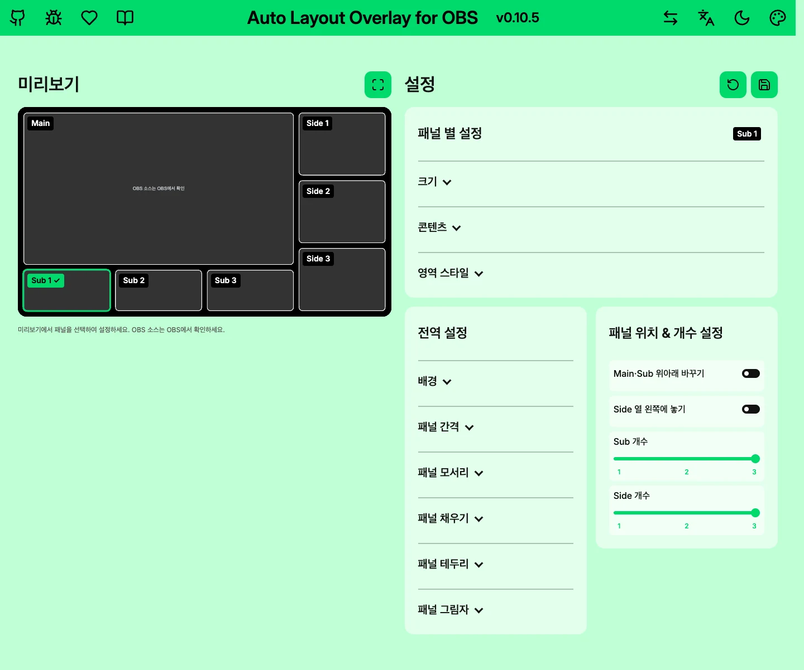

v0.10.5 웹 설정 화면 · 2026.11.16 캡처v0.10.5 browser editor · captured Nov 16, 2026
ALO4OBS
v0.10.5 · 웹 설정 지원Browser-based setup
방송 패널 자동 배치 오버레이Auto-layout overlay for OBS
방송 패널을 자동으로 배치하는 OBS 오버레이입니다. 웹에서 Bento·Overlap 레이아웃을 설정한 뒤 개인 설정 ZIP 하나를 내려받아 적용합니다. 기획부터 화면 설계, 구현 명세, 검수와 배포까지 맡았습니다.An OBS overlay that arranges stream panels automatically. Users configure a Bento or Overlap layout in the browser, then download a single Settings ZIP to apply it. I handled planning, interface design, implementation specs, testing, and release.
맡은 일과 설계 과정Role & design decisions
- 프로게이머 스트리머 피드백을 v0.7.1에 반영, 실제 라이브 방송에서 사용Feedback from a pro-gamer streamer shipped in v0.7.1; used on real live streams
- 설정을 쉽게 고르도록 간격과 여백을 슬라이더 하나로 합쳤습니다. 패널 이름도 번호 대신 Main·Sub·Side로 구분했습니다.Combined gap and margin into one slider to simplify setup, and replaced numbered panel names with Main, Sub, and Side.